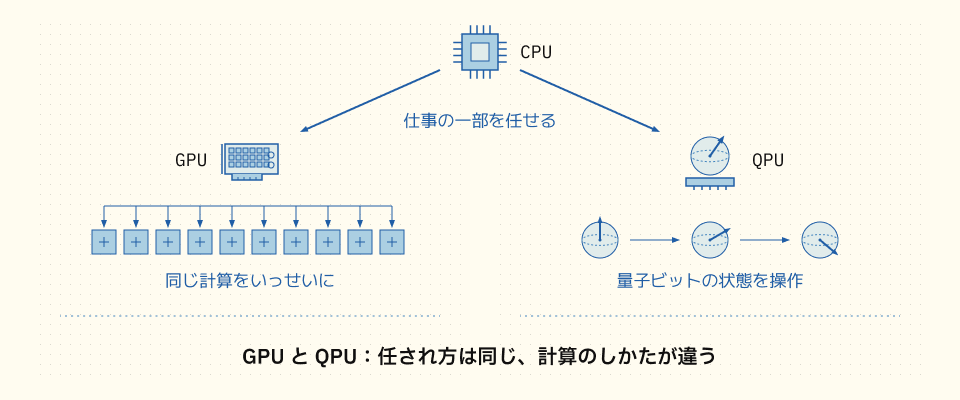

イントロダクション
QPU とは
量子コンピュータの正しい位置付け
QPU は、特定のタスクを担う量子処理ユニットです。GPU との比較から、量子コンピュータの位置付けと使い方を見ていきましょう。
量子コンピュータの位置付け
量子コンピュータには、過大な期待も寄せられています。最近の過熱する量子コンピュータ報道では、「量子コンピュータとは、従来のコンピュータとまったく異なる方式の超高速なコンピュータであり、近い将来には従来のコンピュータはすべて量子コンピュータに置き換わる」という論調のものが少なくありません。
これは、大きな誤解です。はじめにで述べたように、量子コンピュータは量子探索 (グローヴァー探索) や量子因数分解といった特定のタスクで威力を発揮するもので、従来のコンピュータでは現実的な時間では解けなかった種類の問題を扱うことが期待される、特殊なアクセラレータの一種と考えることができます。
量子コンピュータが得意なタスクは、実はまだあまり多くは知られていません。古典アルゴリズムに対する高速化が期待される量子アルゴリズムの一覧は、Quantum Algorithm Zoo というサイトにまとまっています。しかし、その掲載数は数十個 (74 個) ですQuantum Algorithm Zoo の 2026 年 9 月 10 日更新版には 74 個掲載。掲載数は既知の量子アルゴリズムすべての数や、応用できる問題の種類の数を表すものではありません。また、高速化の条件や程度はアルゴリズムによって異なります。。この件数だけで将来を判断することはできませんが、得意なタスクが限られていることを踏まえると、近い将来に現在のコンピュータすべてが量子コンピュータに置き換わるわけではない、とも言えそうです。
とは言っても、いくつかの量子アルゴリズムは期待できるものです。たとえば量子探索 (グローヴァー探索) や量子因数分解、HHL連立一次方程式の解を量子状態として得る量子アルゴリズム。高速化には、行列が疎で条件数がよいことや、入力を効率よく量子状態として準備できることなどの条件があります。答えはベクトルの各成分ではなく量子状態として得られるため、すべての成分を読み出すと高速化の利点が失われることがあります。HHL はアルゴリズムを開発したホロー (Harrow)、ハシディム (Hassidim)、ロイド (Lloyd) 氏の頭文字を取ったもの。Aram W. Harrow, Avinatan Hassidim, Seth Lloyd, Quantum Algorithm for Linear Systems of Equations (2008) といった量子アルゴリズムは幅広い応用が研究されており、条件が合えば高速化が見込めるため、特定タスク向けアクセラレータとしての量子コンピュータが期待されているのです。
特定のタスク向けの設計が、ドメイン指向アーキテクチャです。GPU (Graphics Processing Unit: 画像処理ユニット) が代表的存在です。もともとグラフィック処理向けに開発された GPU はコア数が非常に多いことから並列性が高く、ニューラルネットワークの計算を効率よく実行できることから、現在では機械学習ドメインに特化した専用 GPU も登場しています。量子コンピュータも、本来は従来のコンピュータと対立するものではなく、むしろ GPU と同じレイヤに位置付けられる「CPU 補助デバイス」と考えると分かりやすいでしょう。
量子計算を担うのが QPU です。GPU からの類推による呼び名で、QPU (Quantum Processing Unit: 量子処理ユニット) は、量子コンピュータのうち量子ビットを使って計算を担う部分や装置を指します。QPU は、制御装置や従来のコンピュータなども含む量子コンピュータ全体とは区別されます。実際のところ、GPU と QPU にはどれだけ類似点があるでしょうか。まずは GPU プログラミングの特徴を挙げてみましょう:

-
GPU に適したタスクもあれば、まったく適さないタスクもある。
GPU は、大量の単純な演算を並列に行うタスクに適しています。大量の積や和の計算が必要なディープラーニングなどがこれにあたります。一方で、逐次処理や複雑な分岐が多いタスクには向きません。
-
プログラムの処理すべてを GPU 上で実行することは非常にまれ。
プログラムのメイン処理は通常 CPU 上で実行されます。CPU で実行するメインプログラムが一部のタスクを GPU で実行し、実行結果を回収しながら処理を進めます。
-
GPU プログラミングには、専用の開発環境を使うことが多い。
GPU と CPU は、ハードウェア構成が異なります。そのため、GPU 向けの特別な言語やコンパイラ、ライブラリなどの開発環境とランタイム環境を使うことが多くあります。NVIDIA の GPU 向けの CUDA や、C や Fortran で使える OpenACC などがその代表です。
興味深いことに、「GPU」を「QPU」に置き換えてもほぼ同じことがあてはまります!

GPU の歩みは、QPU の未来を考える手がかりになります。1999 年、NVIDIA の GeForce 256 が「GPU」という言葉を広めましたNVIDIA の公式ブログでは、1999 年の GeForce 256 と、2007 年に初めて公開された CUDA が紹介されています。CUDA については CUDA Zone も参照。。当初、GPU を汎用計算に利用するには特別な手法が必要で、扱える人は限られていました。その後、2007 年に公開された CUDA などの開発環境が成熟し、現在ではゲーム産業や数値計算をはじめ、AI などの分野でも、GPU の専門家に限らずふつうの開発者がライブラリなどを通じて GPU を使っています。そう考えれば、QPU プログラミングにも最初は多少の混乱はあるでしょうが、いずれ当たり前の技術になるかもしれません。それならいつかは自分にもできそう、そう思えてきませんか?